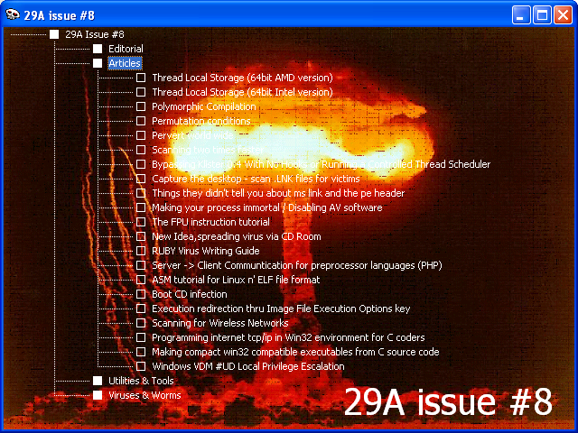

_________29A Issue # 8
Editorial______
Introduction
VirusBuster/29A
News
VirusBuster/29A
Contributors
VirusBuster/29A
Membership
VirusBuster/29A
Distribution
VirusBuster/29A
Our greetings
29A staff
Policies and goals
29A staff
Secret area
VirusBuster/29A
About the viewer
VirusBuster/29A
Articles______
Thread Local Storage (64bit AMD version)
roy g biv/29A
Thread Local Storage (64bit Intel version)
roy g biv/29A
Polymorphic Compilation
...
Permutation conditions
Z0MBiE/29A
Pervert world wide
Z0MBiE/29A
Scanning two times faster
...
Bypassing Klister 0.4 With No Hooks or Running a Controlled Thread Scheduler
90210//HI-TECH
Capture the desktop - scan .LNK files for victims
DiA/rRlf
Things they didn't tell you about ms link and the pe header
lifewire / ikx
Making your process immortal / Disabling AV software
Microprocessor
The FPU instruction tutorial
Surya/powerdryv
New Idea,spreading virus via CD Room
Psychologic
RUBY Virus Writing Guide
Second Part To Hell/[rRlf]
Server -> Client Communtication for preprocessor languages (PHP)
Second Part To Hell/[rRlf]
ASM tutorial for Linux n' ELF file format
LiTlLe VxW
Boot CD infection
LiTlLe VxW
Execution redirection thru Image File Execution Options key
GriYo/29A
Scanning for Wireless Networks
GriYo/29A
Programming internet tcp/ip in Win32 environment for C coders
DoxtorL
Making compact win32 compatible executables from C source code
DoxtorL
Windows VDM #UD Local Privilege Escalation
aluc4rd
Utilities______
O'Brother
...
ARMPOLY v1
Vecna/29A
Tiny FTP server for W32 and Linux
Vecna/29A
Loading ELF files under W32
Vecna/29A
MistFall 2.0
Z0MBiE/29A
RSALIB 6.0
Z0MBiE/29A
Statistical Executable Trash Generator
Z0MBiE/29A
Shellcode Constructor Engine
Z0MBiE/29A
eXtended (XDE) disassembler engine v1.02
Z0MBiE/29A
Scanning two times faster code
...
Process Hide v2.0
sars [HI-TECH]
Virus Creation Labs for Windows
...
9xRX (9x - RootXit)
archphase
PackItBitch
archphase
Key logger for ANSI keyboards
...
Win2k/XP Shell codes
bcom
Tiny Sting
Extra_Face
Preventing your computer from booting up (v1 and v2)
...
Cicada
Amadeus
C-BOT, a simple compact IRC bot
DoxtorL
Viruses & Worms______
W32/W64.Shrug / W64/W32.Shrug
roy g biv/29A
W64.Shrug (AMD version)
roy g biv/29A
W64.Shrug (Intel version)
roy g biv/29A
Caribe
Vallez/29A
JollyRoger v1
Vallez/29A
JollyRoger v2
Vallez/29A
sic semper tirannis
Vecna/29A
666 worm
...
Beagle
...
eris
cH4R_
Lin32.Caline
cyneox/DCA
Lin32.Nemox
cyneox/DCA
Nf3ct0r
cyneox/DCA
Win32.Norther
DR-EF
I-Worm\Win32.Voltage
DR-EF
Win32.Abigor
Extra_Face
Win32/Linux.MetaPHOR v1D
The Mental Driller/29A
NetRobot v1 and v2
Microprocessor
Win32.PolutoSP v2.0
PiKaS
Win32.Crucio
powerdryv
W32.Unair
Psychologic
WinCE.Dust
Ratter/29A
Spread
...
Ephemeral 2.6
Tree Hugger
Morphine
Vorgon/iKX
Perl.Santy
...
